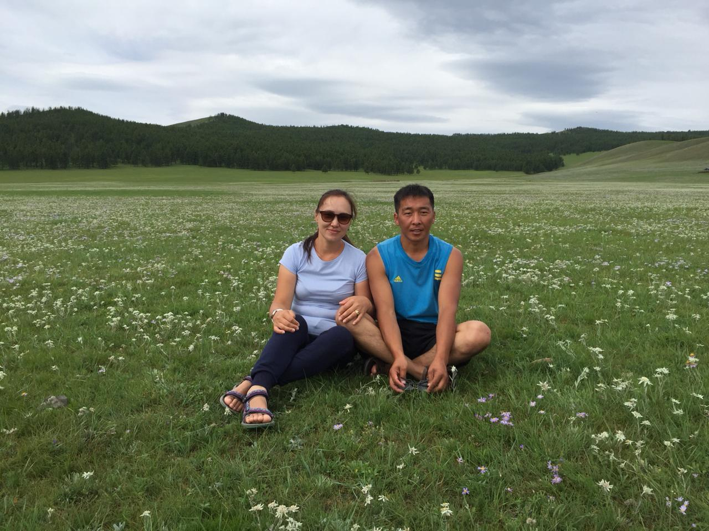
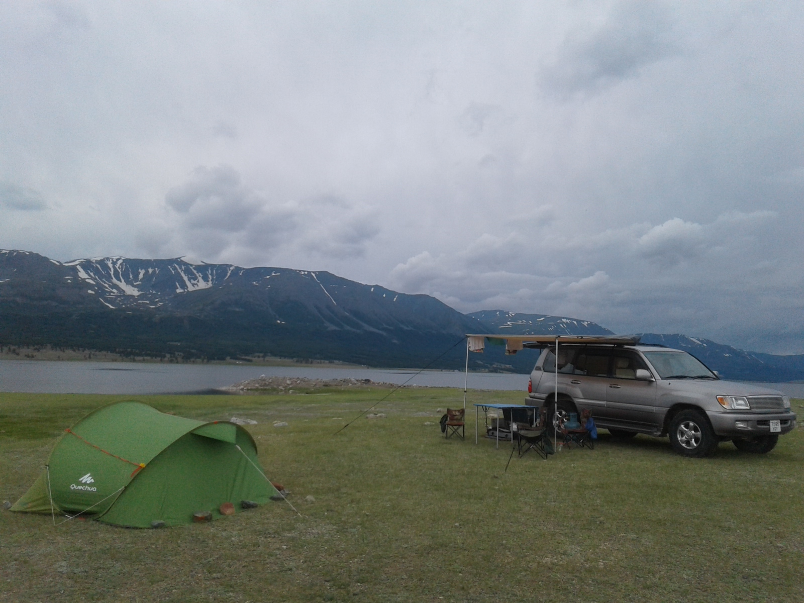

Über uns
Wir sind ein leidenschaftliches Reiseleiterehepaar aus Ulaanbaatar, wo wir mit unseren zwei Söhnen leben. In der Tourismusbranche haben wir langjährige Erfahrung. Mein Mann Muujig arbeitet seit 2007 als Fahrer und ich, Togosoo, bin seit 2010 Reiseleiterin. Wir sind beide in der Mongolei auf dem Land geboren und aufgewachsen. Mein Mann ist ein begeisterter Technikfan und kennt sich bestens mit Autos, deren Reparatur und Navigation - natürlich auch abseits befestigter Wege - aus. Ich bin Diplomübersetzerin und Dolmetscherin für Deutsch und habe insgesamt 4 Jahre in Deutschland und Österreich gelebt. Kochen ist meine große Leidenschaft. Auf unserer gemeinsamen Reise kann ich Ihnen neben leckeren mongolischen Spezialitäten auch europäische Küche anbieten. Als Team liegen unsere Stärken nicht nur in unserer langjährigen Erfahrung sondern auch in unseren technischen, sprachlichen und kulturellen Kenntnissen, in denen wir uns ideal ergänzen.

Reisen Sie mit uns durch die Mongolei
Wir laden Sie ein, in unserem weiten, schönen Land sorgenfrei und entspannt zu reisen. Die Landschaft der Mongolei ist abwechslungsreich und vielfältig. Erleben und entdecken Sie die einzigartigen, kontrastreichen Landschaften und das Nomadenleben und –kultur hautnah auf dem Land bei den Hirtenfamilien. Gerne organisieren wir für Sie eine interessante Reise, sei es eine kurze oder lange Rundreise im Jeep, eine Pferde-, Kamel- oder Wanderreisen.
Kontakt
Um Kontakt mit uns aufzunehmen, schicken Sie uns gerne ein Email, rufen Sie uns an (Achtung, es fallen internationale Gesprächsgebühren an) oder schreiben Sie uns einfach eine WhatsApp-Nachricht.